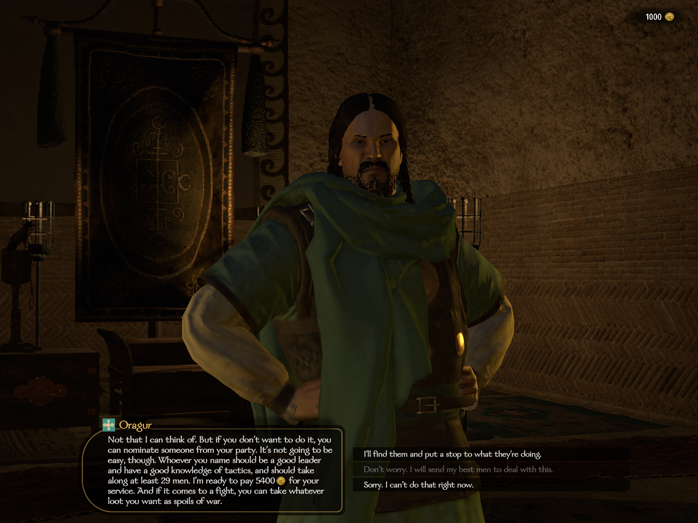
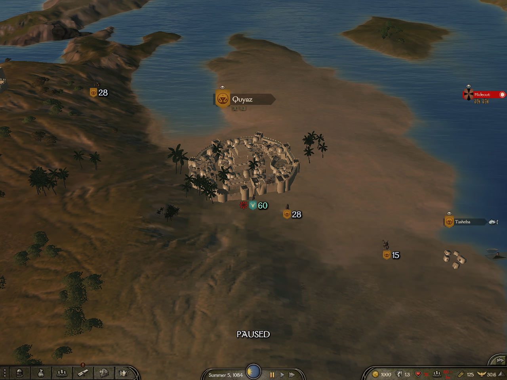
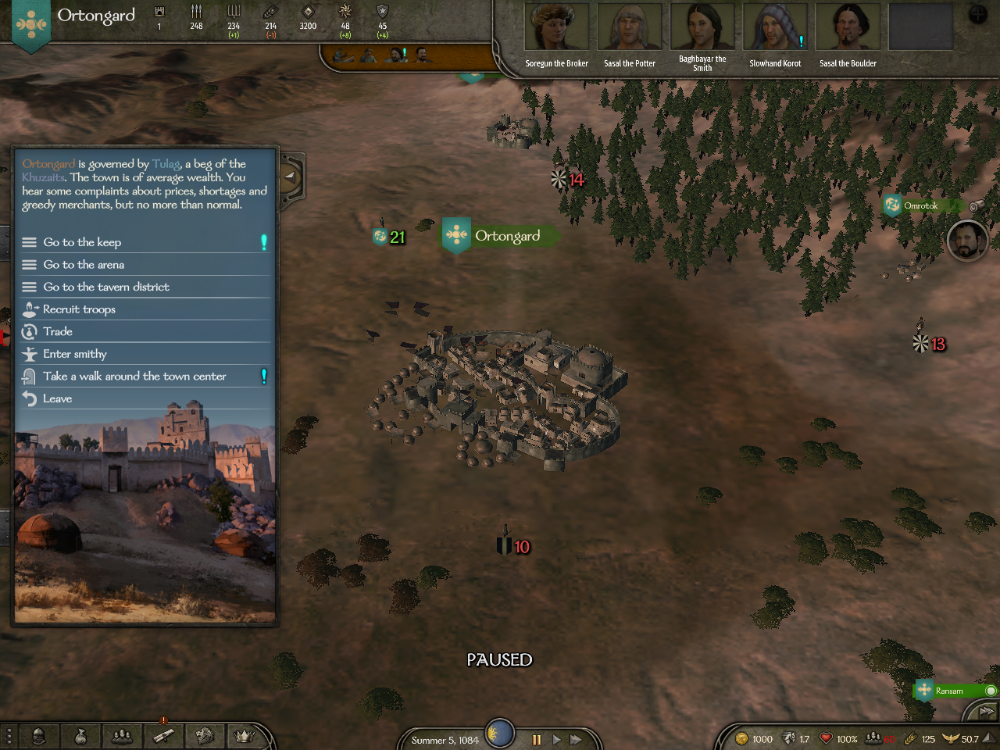
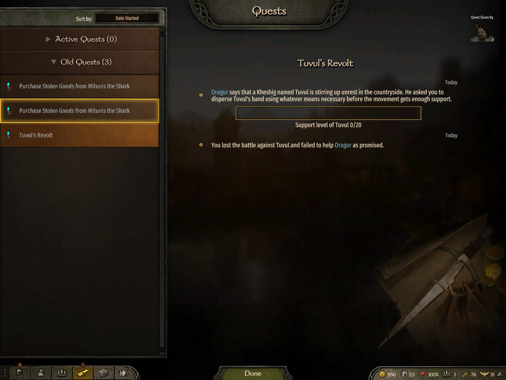
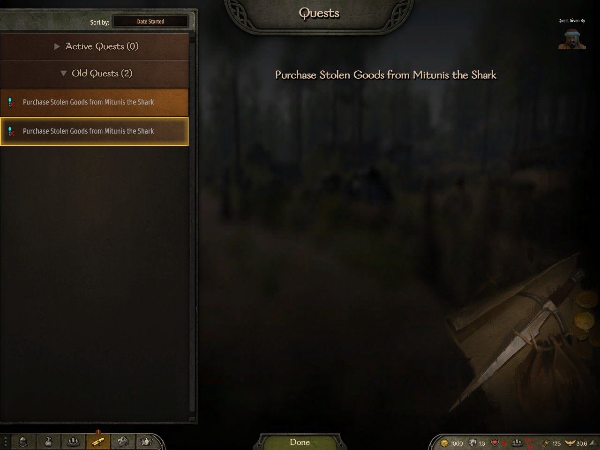
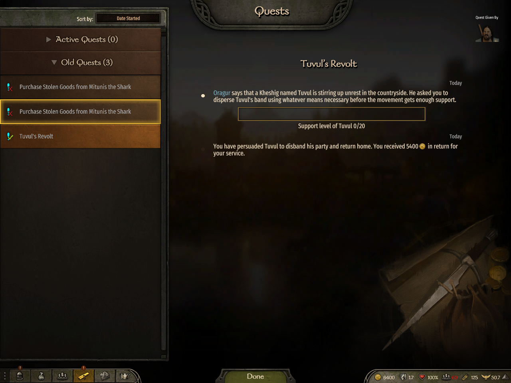
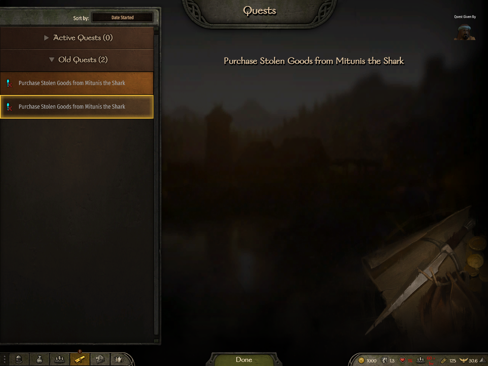
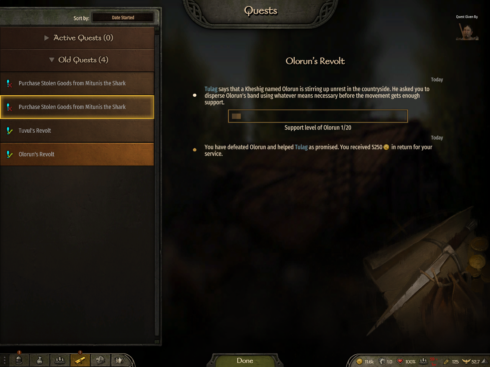
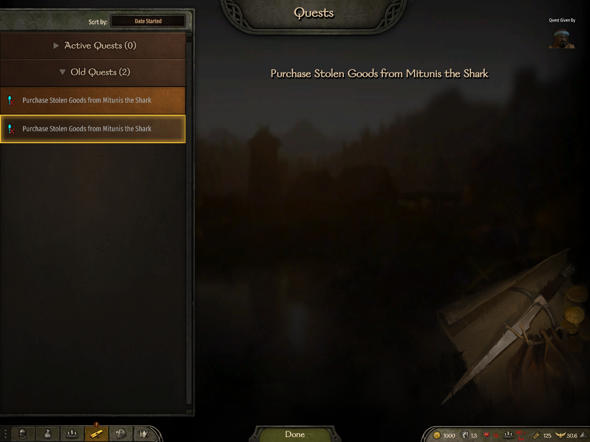
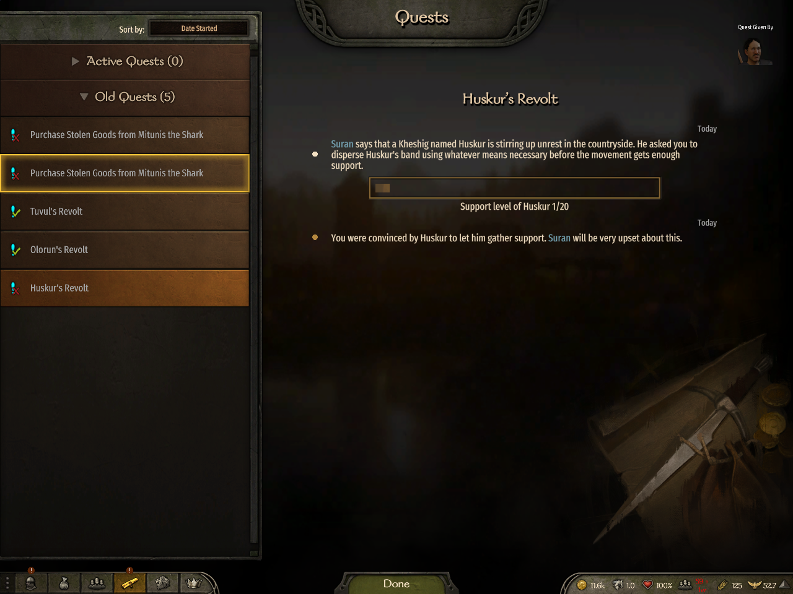
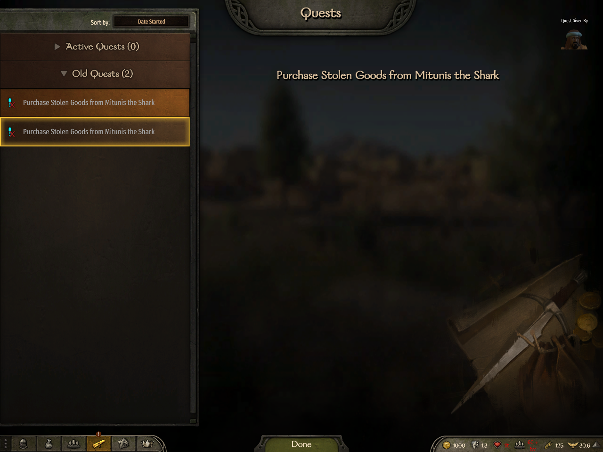
# Lesser Noble Revolt: four ending branches and owner isolation Up24 `issue3783-20261023T114021` tested **bd74a2d5323edd542faebc14b4b9802e6db81184**, tree `311491b1b93a9b28a6edf83fc2dab4fdb5981cd6`. A dedicated server, owner B and observer A completed SuccessByAgreement, SuccessByBattle and FailureByRelease through their native branches. Nine strict server/A/B checks passed. All six final journal images below were independently opened and accepted by the parent. FailureByBattle (R4) remains the accepted up22/up23 result at **6e268638332dc9c89111b04aea9640b67f6e8ec6**, tree `5d81be457582f5ea3fb3539d435b86729052f06c`. bd74 deletes only two blank test lines; every other tracked blob is identical. R4 is product-equivalent evidence with its original tested SHA, not a new bd74 R4 run. Dependency #4068 own head is **78dc159175e19491a7825fcc8f6348ffcc24f32a**. All 18 relevant production paths and its complete Framework tree match combined bd74. These combined live results do not claim a native run at #4068's own SHA. ## Measured branch results | Ending and tested source | Owner gold delta | Observed renown delta | Honor XP delta | Giver relation delta | Rural notable delta | Observer personal deltas | | --- | ---: | ---: | ---: | ---: | --- | --- | | SuccessByAgreement, bd74 | +5400 | +1 | -10 | +8 | Mitunis of Tubilis, both players 0 to 0 | 0 | | SuccessByBattle, bd74 | +5250 | +5.0472302 total | +30 | +9 | Kazam of Urunjan, B -2, A 0 | 0 | | FailureByRelease, bd74 | 0 | 0 | 0 | -5 | Chaghan of Tismil, B +1, A 0 | 0 | | FailureByBattle (R4), 6e268 | -50 ordinary battle loss; quest reward 0 | 0 | -15 | -5 | Mitunis of Tubilis, both players 0 to 0 | 0 | Battle renown includes native battle rewards as well as the quest's +3; the entire +5.0472302 is not a quest reward. The +9 giver delta includes the native relation model. No reward-method invocation count is claimed. Numeric state is receipt-backed, not inferred from journal pixels. Each ending has one logical server send of NetworkApplyDestroyParty, NetworkDestroyInstance and NetworkIssueFinalized; each client receives each once. Native MobilePartyDestroyed occurs once on server/A/B, and the exact captured party is absent from every world and ID/handle registry. Client patch-generated local events remain zero, distinct from their received messages. Only battle sends OwnerBattleEnded to B once and A zero times. These are logical transport/broker/native callback counts, not UDP datagrams. Up23 R4 has the same independently scoped destruction/finalization counts and owner-only battle-ended delivery. All rural samples are actual nonempty RuralNotable rows on all three peers: Mitunis Hero_CharacterObject_2275, Kazam Hero_CharacterObject_2669 and Chaghan Hero_CharacterObject_2642. Observer relations remain unchanged. Full branch counters, strict checks and rural before/after receipts are included. ## Images and exact visual acceptance The five up23 images retain their original captions and source, with the actual R4 branch label. The two 40-r4 accepted images are pre-ending context only: neither shows an active quest or journal. Acceptance and active state are established by associated strict receipts. The offer image is pre-accept dialogue. No journal-before or unviewed penalty image is claimed.  Oragur visibly offers 5,400 gold and the player can choose 'I'll find them and put a stop to what they're doing.' Gold is 1,000. This is the offer before acceptance. Tested `6e268638332dc9c89111b04aea9640b67f6e8ec6`; SHA256 `ca8d69bd73f330f3ce890ea72c7a8a7a779c037dd6481c510d21205c90a7bd48`.  Observer A on the Quyaz map, gold 1,000. Pre-ending context only. Associated strict receipts establish B owns an active quest and A has no quest; those states are not visible in this image. Tested `6e268638332dc9c89111b04aea9640b67f6e8ec6`; SHA256 `41c0a1e717c9e56040eb8ea563b88093fffcc2e8543a51470540758279312ec8`.  Owner B in the Ortongard town menu, gold 1,000. Pre-ending context only. The accepted, active quest is receipt-backed; neither a quest nor its journal is visible here. Tested `6e268638332dc9c89111b04aea9640b67f6e8ec6`; SHA256 `7cc1a94af901aefa8bdf0a4d70a4000f11d9db3322a6d65e2431c3a9dfc2b48d`.  FailureByBattle (R4): Owner B: Old Quests 3 and Tuvul's Revolt failed, with its opening and full battle-loss ending each once. The other seed row stays highlighted while the details show Tuvul. Tested `6e268638332dc9c89111b04aea9640b67f6e8ec6`; SHA256 `9dcf196524084017652c9498050288f0111d472bf0bbfabd524d89b1d4f4d300`.  FailureByBattle (R4): Observer A: Active Quests 0, Old Quests 2, only existing Mitunis seed entries. No Tuvul entry. The specific journal lookup also returned no matching native entry. Tested `6e268638332dc9c89111b04aea9640b67f6e8ec6`; SHA256 `19708bc3cb20f55a56b335251a12d2459d9fc9a14aa2b6298ea4efe1f4fc29bb`.  SuccessByAgreement: owner B: Old Quests 3, Tuvul's Revolt succeeded; opening and persuaded-disband ending with 5,400 gold each once. Tested `bd74a2d5323edd542faebc14b4b9802e6db81184`; SHA256 `810ba6e482e89ac03f97a2543e3163ab0847f0a2a252ddaf51a4a810db4e50e0`.  SuccessByAgreement: observer A: Active Quests 0, Old Quests 2, only seed entries; no matching revolt entry. Tested `bd74a2d5323edd542faebc14b4b9802e6db81184`; SHA256 `a58362e17616ee90d17d7b026081aaa5b5b1cba2480e8b8bf5dbaf2a35a6067e`.  SuccessByBattle: owner B: Old Quests 4, Olorun's Revolt succeeded; opening and defeated ending with 5,250 gold each once. Prior Tuvul success remains. Tested `bd74a2d5323edd542faebc14b4b9802e6db81184`; SHA256 `3f5bfa91b8e605384abc64ef442d87dac5892d9cfd96b190e915cdd69b36cbd5`.  SuccessByBattle: observer A: Active Quests 0, Old Quests 2, only seed entries; no matching revolt entry. Tested `bd74a2d5323edd542faebc14b4b9802e6db81184`; SHA256 `a5308795b09890f2879699a8e8071787bbfab4dd826b703b4b8b52c6521d5426`.  FailureByRelease: owner B: Old Quests 5, Huskur's Revolt failed; opening and convinced-let-gather-support ending each once. Both earlier successes remain. Tested `bd74a2d5323edd542faebc14b4b9802e6db81184`; SHA256 `7b1cc8107bdaae6e7b33f60b6f6fb3e9dd47d7e20a5a2fe3f6895b512f53a280`.  FailureByRelease: observer A: Active Quests 0, Old Quests 2, only seed entries; no matching revolt entry. Tested `bd74a2d5323edd542faebc14b4b9802e6db81184`; SHA256 `0fcad0b17a793ff9a6566786e827630e724257eb3c1a432a37fb798bbc0bff29`. ## Release, cleanup and limits Full Release HIVE **docker-ci-5ac79ce07653451c8953** at bd74: **6,879 passed, 0 failed, 3 existing skips**, all eight shards. All 2,872 discovered E2E cases are accounted for, 2,871 passed and one existing skip. LNR26, EndingJournal13, NestedQuestEnding7, Scout15, Artisan31 and crafting18 pass, including both LNR timeout regressions. Process-peer7/7, all309 result-manifest members and repaired runner bundle0fb4bda6 were verified. No supported focused Release selector exists; the ordinary full Release provides these checks. The prior facfa Release remains historical6e268 evidence. Final Codex and Muse source reviews are clean. Up24 cleanup verified all owned processes absent, bench released, config restored and all five shared/source-save comparisons unchanged. Up23 cleanup and its nonempty rural/destruction proof remain preserved. No new CI, live, kit compile or source change was performed for publication. Retained logs contain managed diagnostics; no clean-log claim is made. Stopped preparations and limitations remain in the original up24 REPORT. The four enum-ending image pairs are covered; no additional accepted-quest rejoin coverage is inferred. Run-local publication is explicitly authorized by Supervisor09:58 and11:33. Legacy workflow1add revision44 and its canonical pipeline are untouched. This package creates no broker acceptance or replacement workflow.